VII) Création de graphiques
Excel permet de créer des graphiques à partir de données saisies au niveau d’une plage de cellules. Il suffit de sélectionner la plage souhaitée, puis de choisir une commande dans l’onglet Insertion du ruban. Utilisons cette plage de cellules ci-dessous comme exemple: 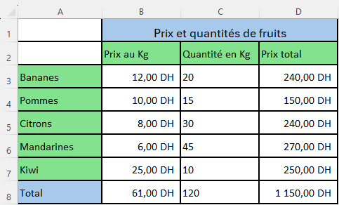
1. Exemple de génération de graphique
Méthode 1 : Utiliser les graphiques recommandés
✔ Sélectionnez les données à insérer dans le graphique (la plage A2:D7) 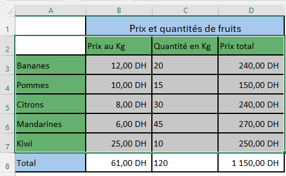 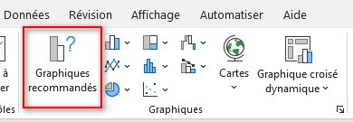 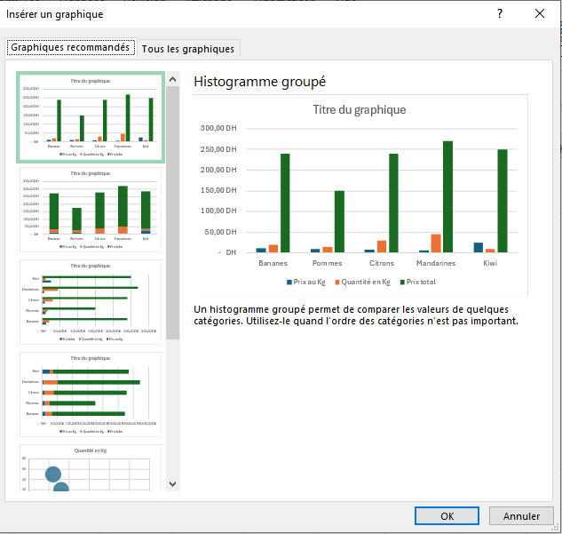
Méthode 2 : Choisissez le type de graphique souhaité
✔ Sélectionnez la plage de cellules A2:D7 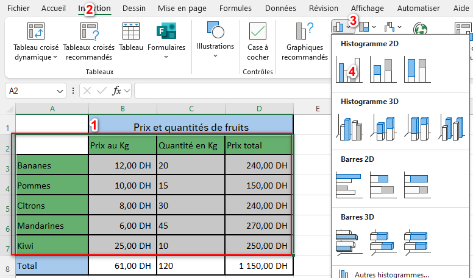 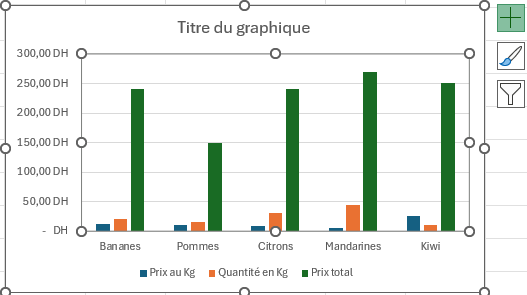
✔ Cliquez sur l’onglet Insertion du ruban
✔ Cliquez sur une commande du groupe Graphiques selon le type de graphique souhaité. Soit par exemple la commande Insérer un histogramme ou un graphique à barres
✔ Choisissez un sous type du menu qui apparait.
à droite de votre graphique, vous pouvez cliquer sur l’icône:
| pour choisir les éléments que vous souhaitez afficher : titre du graphique, étiquettes de données (vos chiffres), légende, etc. | |
| pour modifier la couleur et le style de graphique. | |
| pour afficher seulement certaines données sur votre graphique |
Remarque :
Lorsque vous sélectionnez un graphique généré, Excel ajoute au ruban deux onglets Création et Format qui disparaissent dès que vous cliquez ailleurs. Les commandes de ces deux onglets sont bien entendu prévues pour la personnalisation d’un graphique généré.
2. Ajouter des étiquettes de l’axe horizontal
✔ Sélectionnez le graphique 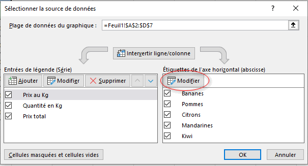
✔sous l’onglet «Création», Cliquez sur «Sélectionner des données»
✔Sélectionnez les étiquettes à ajouter au graphique et cliquez sur «OK»
3. Ajouter un élément à un graphique:
✔ Sélectionnez le graphique 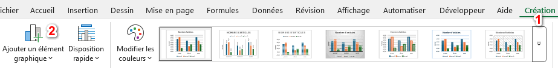
✔sous l’onglet «Création», Cliquez sur «Ajouter un élément graphique »
4. Modifier le type de graphique
✔ Sélectionnez le graphique 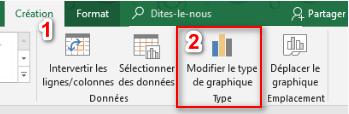
✔sous l’onglet «Création», Cliquez sur «Modifier le type de graphique»
5. Ajouter des données à un graphique existant
✔ Sélectionnez le graphique 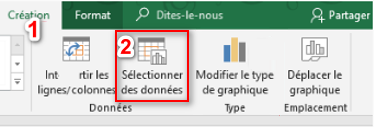 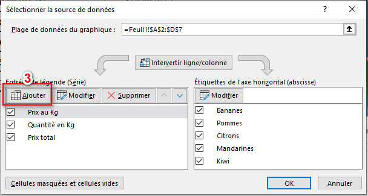 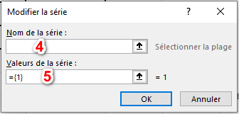
✔sous l’onglet «Création», Cliquez sur «Sélectionner des données»
- «Valeurs de la série»: Sélectionnez les valeurs de la série de données à ajouter
6. Supprimer des données d’un graphique
✔ Sélectionnez le graphique
✔sous l’onglet «Création», Cliquez sur «Sélectionner des données»
✔Sélectionnez la série de données à supprimer puis cliquez sur «Supprimer»

7. Basculer entre les lignes et les colonnes
✔ Sélectionnez le graphique 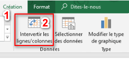
✔ sous l’onglet «Création», Cliquez sur «Intervertir de ligne/colonne»
✔ Les lignes passent en colonnes
8. Déplacer le graphique sur une autre feuille de classeur
✔ Sélectionnez le graphique 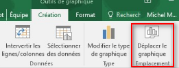
✔ sous l’onglet «Création», Cliquez sur «Déplacer le graphique»
✔ Choisissez la feuille sur laquelle vous souhaitez le déplacer et cliquez sur «OK»